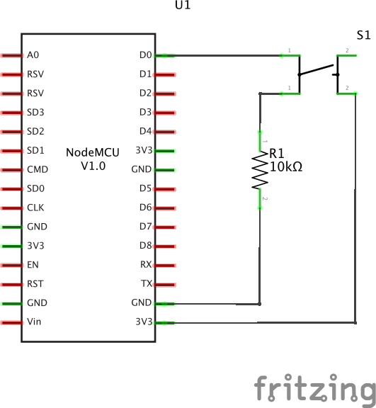

Use the NodeMCU web-enabled microcontroller to send sensor values to a computer running a python OSC server.
In this exercise, we will be sending OSC messages (not bundles) from the NodeMCU using the same UDP library that we used in the recieve exercise. Just as a reminder, an OSC message consists of an address that starts with "/" and a piece of data which in our case will be the state of a button connected to the NodeMCU.
As a challenge, try hooking up the Adafruit I2C ADC from an earlier exercise. Then, edit the example code (for both the NodeMCU and the computer) to send the values of all 4 of the analog pins to the computer.
Now that we know how to send and receive OSC messages, you could have multiple NodeMCUs talking to each other. However, you will need to be sending bundles instead of messages. Check out the "UDPSendBundle" example sketch that is included in the OSC Arduino library. Additionally, you will need to know the ip address of both of your NodeMCUs. For now you can just read their serial output and re-upload code with the updated address. However, the ip addresses may change and this wont work if the NodeMCUs are embedded in a project. If you want to use multiple NodeMCUs to talk to each other talk to us about getting your NodeMCUs static ip addresses on the lab router.
